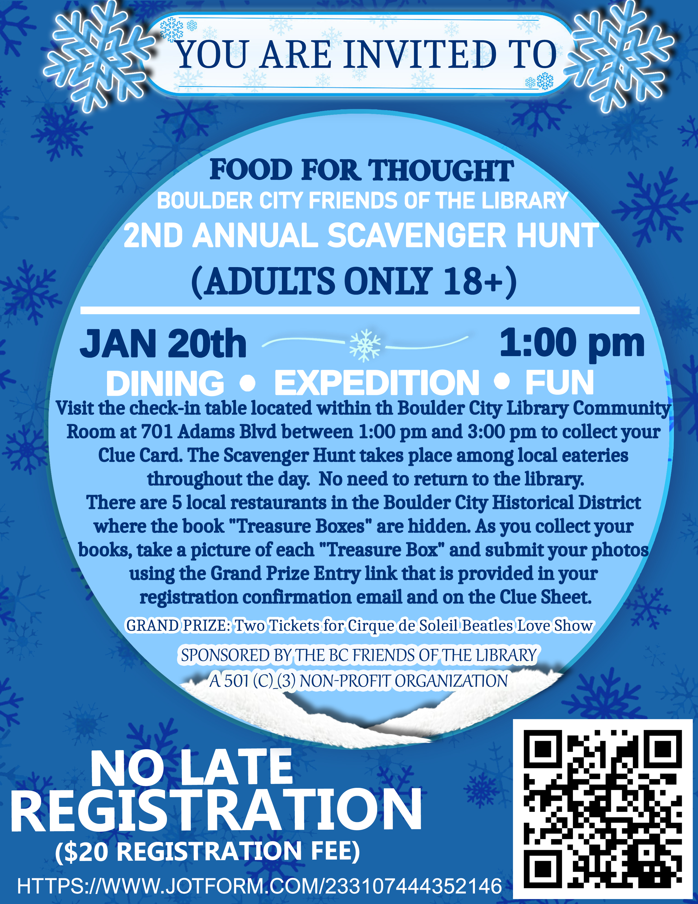

Explore the world of literature and community at Friends of the Library. Join us on a journey where words come alive.
Feel the connection with each page turned, and let the magic of storytelling transport you to new realms of imagination and knowledge.
At Friends of the Library, we believe in the power of books to unite people and inspire a shared love for reading.
FOOD FOR THOUGHT 2ND ANNUAL ADULT SCAVENGER HUNT
Join us for an exciting exploration of the finest dining spots in our community while discovering unique books along the way! To kick off the event, check-in at the Boulder City Library Community Room between 1:00 pm and 3:00 pm to receive your exclusive Clue Card.
Embark on a culinary and literary adventure through beautiful Boulder City with our 2nd Annual Scavenger Hunt! Join us for an exciting exploration of the finest dining spots in our community while discovering unique books along the way! To kick off the event, check-in at the Boulder City Library Community Room between 1:00 pm and 3:00 pm to receive your exclusive Clue Card. This card is your passport to discovering five remarkable local eateries, each offering a unique chapter in your scavenger hunt journey.
As you follow the clues, indulge in the pleasure of dining in, while relishing delightful beverages and treats at every stop. And that's not all! All registered participants will be entered into a raffle for a chance to win our grand prize — all for the unbeatable registration fee of $20! Don't miss out on this delectable experience that combines the thrill of a scavenger hunt with the joy of savoring the best our small town has to offer!
Friends of the Library is more than just an organization; it's a family of book lovers dedicated to fostering a love for reading. Join us in our mission to make literature accessible to all.
Our community thrives on the exchange of ideas, stories, and the shared passion for the written word. We welcome everyone, from seasoned readers to those just embarking on their literary journey.
Join our book-loving family, and together, let's create a world where the love for reading knows no bounds.